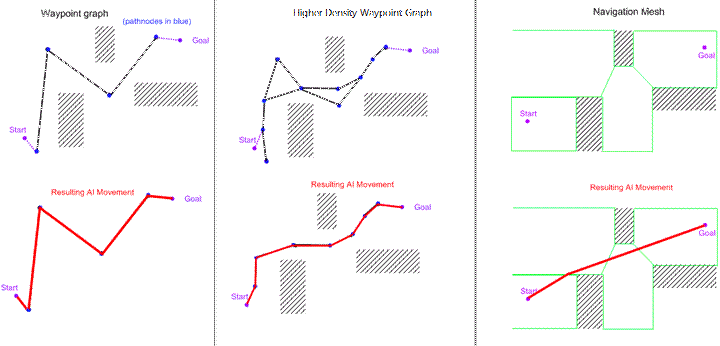

Artificial Inteligence
Are we recording?

Review
What is Skeletal Animation?
- A rig made of bones is used
- Each bone associates with the vertices of the mesh around it with a certain weight
- Keyframes are made with the bones in different positions
- Animation is done by interpolationg between the keyframes
Review
What is Sprite Sheet Animation?
- Similar versions of the same sprite are displayed one after the other creating motion
Review
How does the Unity Animator work?
- Operates like a finite state automaton
- Each state is an animation
- Edges between states describe under what condition the animation change will occur and how
AI Definition
An agent that can perceives its environment and takes actions based on its perception to successfully achieving its goals
Regular AI vs Game AI
- Regular AI aims to maximize its chance of success
- Game AI aims to maximize the fun factor of a game
- Playing agains a bot that does perfect moves every turn isn't fun
Uses of AI in games
- Pathfinding
- Decision making
- Combat AI
- Villagers going about their day in Skyrim
- Procedural content generation
- Procedural levels in Spelunky
- World generation in Minecraft
- Being the best StarCraft player in the world
Pathfinding
- You have a character
- It needs to go from point A to point B
- There may be obstacles
- The character may not fit through gaps
Waypoint Graph
- You have a level
- You break it up into a graph of waypoints
- Each waypoint marks a walkable location
- Edges denote that the area near them has no obstacles
Pathfinding Algorithms
- DFS
- BFS
- Dijkstra
- A* ❤️
- ... Many others
DFS (Depth first search)
- Useful for traversing graphs with a large branching factor and low height
- Inefficient for finding shortest path
- Goes as deep as possible before backtracking (returning to parent nodes)
BFS (Breath first search)
- Can find the shortest path in unweighted graphs
- Traverses the graph by levels
- May use way too much memory
Dijkstra
- Finds the shortest path from one point to every other point in a weighted graph
- Every point is initialy infinately far from the starting point
- At every step we add the closest to the start unvisited point

A*
- At every step we choose the node with smallest value f(n) = g(n) + h(n)
- g(n) is the distance from the starting node to the current node n
- h(n) is the heurestic that gives a distance from n to the goal node
- Heurestic means that it is good enough but not always guranteed to be correct
- Used when the original function is difficult to compute
A* Details
- Much faster than Dijkstra for finding the shortest path between exactly two points
- Is always correct if the heurestic function underestimates the real value
-
Example heurestic functions:
- Euclidian distance
- Manhattan distance(if we can't move diagonaly)
A* Demo

A* Code
openSet = empty set of nodes
add startNode to openSet
closedSet = empty set of nodes
while openSet is not empty
current = node in openSet with min fCost
remove current from openSet
if current == final
return
for neighbour in neighbours of current
if (neighbour is an obstacles
or neighbour is in closedSet)
continue
if (new path to neighbour has a lower fScore
or neighbour is not in openSet)
set improved fCost of neighbour
set parent of neighbour to current
if neighbour is not in openSet
add neighbour to openSet
Navigation Meshes (NavMesh)
- А collection of 2D convex polygons that define which areas of an environment are traversable by an agent
- The polygons are the graphs vertices
- An edge between two polygons exists if they are adjacent
NavMesh vs Waypoint Graph
NavМeshes in Unity
- Agents are represented as cylinders
- Found in Window/AI/Navigation/Agents
- Most components are located in a separate repo
NavМeshe Live Demo
State Machine AI
- Each state represents a behaviour for the AI
- Each edge represents a change of world state
Unity State Machine AI
- Integrated with the Animator
- Each state can have several attached StateMachineBehaviours
- A StateMachineBehaviours has:
- OnStateEnter
- OnStateUpdate
- OnStateExit